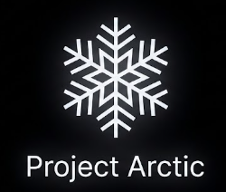

Цей файл лежить у tests/pages/stage1.html і показує, що вміє етап 1 рушія Arctic:
блоки, поля й рамки, рядки, що переносяться по словах, жирний, курсив,
підкреслений, закреслений текст, посилання і тло рядка.
Тло, рамка 2 px і внутрішні поля задані в <style> самої сторінки; шрифт заголовків — із
зовнішньої таблиці stage1.css, підключеної через <link>.
Цей абзац вирівняно по центру.
А цей — праворуч і темно-червоний, кольором rgb().
auto, тло — hsl().int main(void)
{
puts("рядки й пробіли тут як є");
return 0;
}
Логотип Arctic поряд із текстом:

— сидить на базовій лінії.Рядок
розірваний <br>, а розмір 12 px заданий атрибутом style.